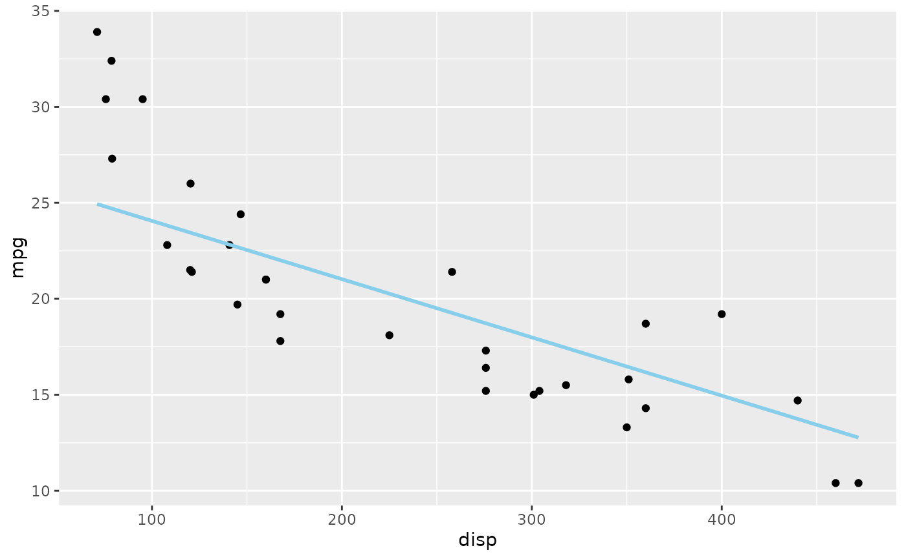
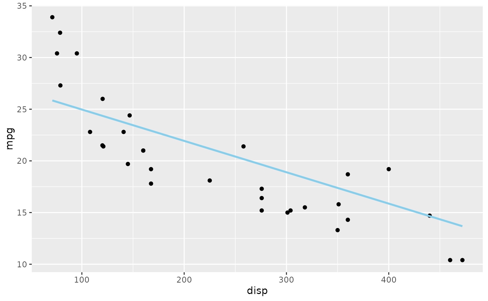
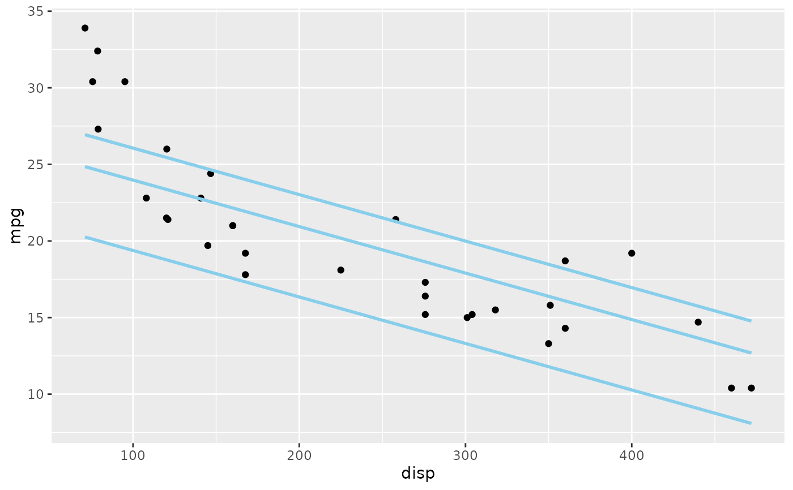
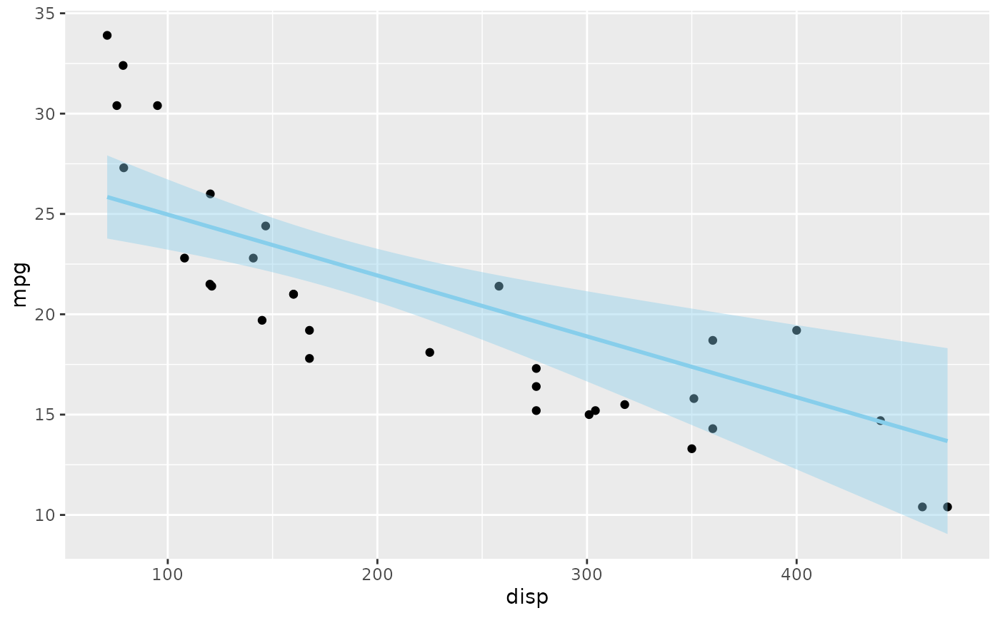
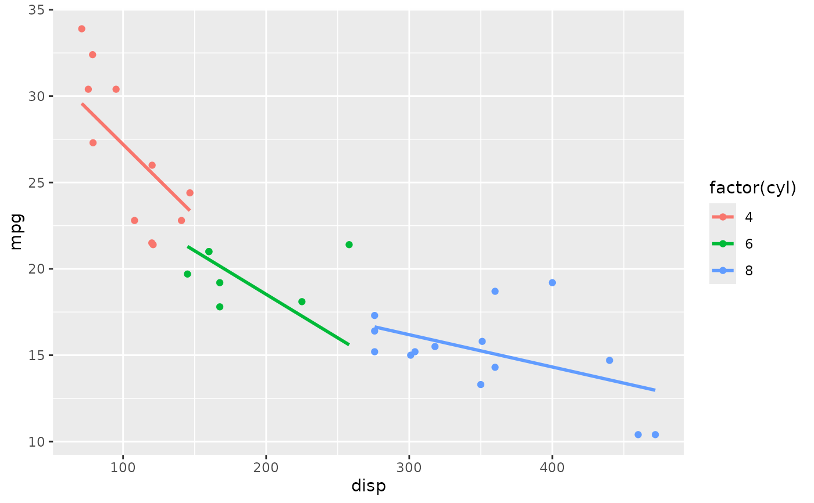
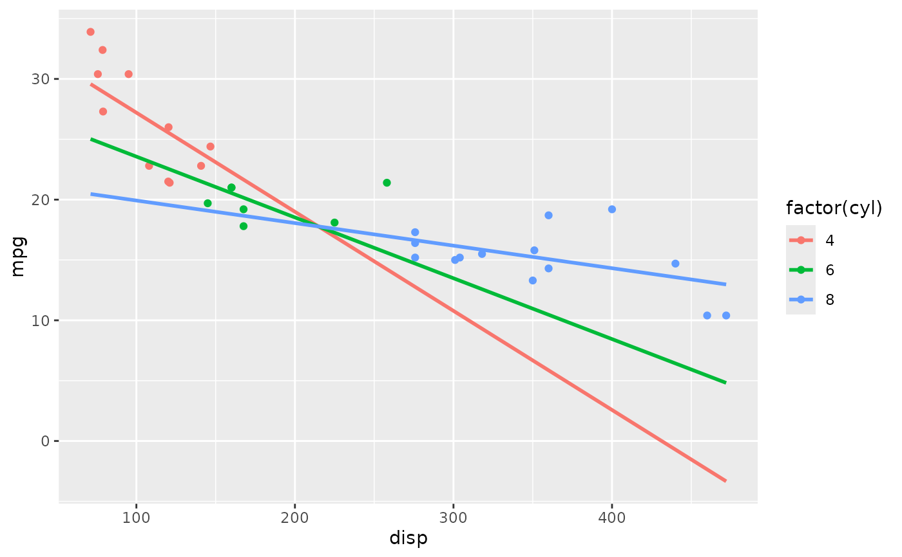
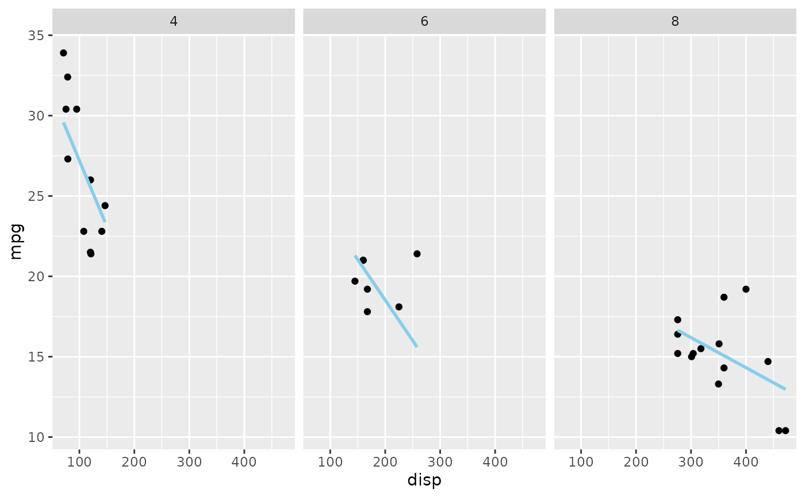
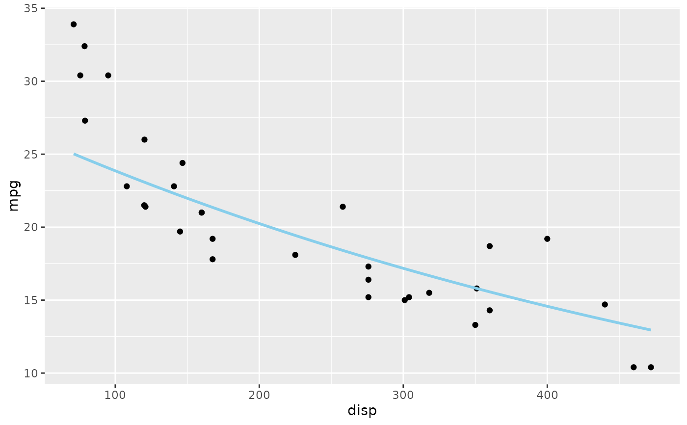
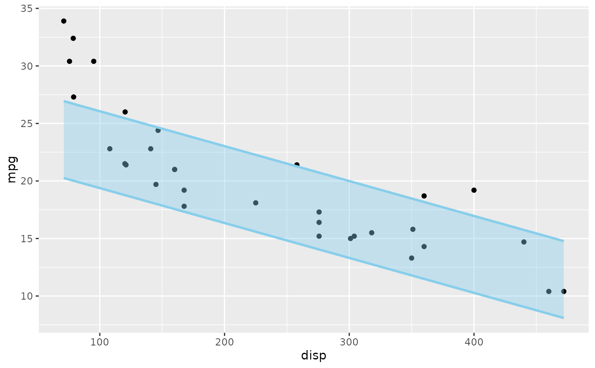

geom_slice() draws the prediction line of a fitted lm() on a ggplot —
a 2D slice of a possibly high-dimensional model. It looks like
ggplot2::geom_smooth(), but where geom_smooth() fits its own model to
the plotted data, geom_slice() draws your model. The predictor mapped to
the plot's x-axis varies along the line; every other predictor is fixed,
and geom_slice() reports how, so it is always clear which slice of the
model you are looking at:
Usage
geom_slice(
model,
n = 100,
inherit.aes = TRUE,
predict_vars = list(),
back_transform = NULL,
interval = "none",
band = FALSE,
full_range = FALSE,
...,
fullrange = NULL
)Arguments
- model
A linear model fitted by
lm().- n
Number of prediction points along the line (default 100).
- inherit.aes
If
TRUE(default), inherit aesthetics from theggplot()call.- predict_vars
A named list of values at which to hold predictors not shown on the plot, such as
predict_vars = list(hp = 110). Unlisted predictors are imputed (with a message). Giving a variable several values draws one line per value, and several multi-value variables are crossed:predict_vars = list(x2 = c(1, 2, 3), x3 = c(1, 4))draws 6 lines.- back_transform
How to map predictions onto the y-axis when the model's response is transformed. Default
NULL(andTRUE) auto-detects from the model formula;FALSEturns back-transformation off; a one-argument function (e.g.exp) or a name ("log","log10","log2","sqrt","exp","inverse") applies that transformation.- interval
Draw a ribbon around the line:
"none"(default), or"confidence"/"prediction"for the correspondingpredict.lm()interval. The ribbon follows its line's color unless you setfill. Cannot be combined withband.- band
Draw a projection band — two edge slices with a translucent ribbon between them — instead of a single line.
band = "variable"spans that predictor: between the values you gave inpredict_vars(e.g.predict_vars = list(x2 = c(1, 4))), or its observed data range whenpredict_varsleaves it out.band = TRUEinfers the variable: the one multi-valuepredict_varsentry, or the single predictor the plot does not otherwise show. DefaultFALSE.- full_range, fullrange
If
TRUE, each line spans the full x range of the panel instead of stopping at its group's own data range (likefullrangeinggplot2::geom_smooth();fullrangeis accepted as an alias). DefaultFALSE. Only applies when the x-axis maps a single predictor; with a composite x-axis expression predictions are made at the data points, so the lines keep their data extent.- ...
Other arguments passed to the layer, such as fixed aesthetics (
color = "red",linewidth = 1.2).
Details
Variables named in
predict_varsare held at your chosen values.Variables mapped to a grouping aesthetic (e.g.
aes(color = g)) are pinned to each group's own value — one line per group. Anyintervalorbandribbon is drawn in its own line's color.Facet variables are pinned to each panel's value.
Anything left over is imputed (mean for numeric, most common value for factor/character), with a console message naming the value used.
If the model's response is transformed (e.g. lm(log(y) ~ x)) but the plot
shows raw y, predictions are automatically back-transformed to match the
y-axis (a message says so). Axis expressions (aes(log(y)), aes(x * x2))
and transformed scales (scale_x_log10()) are also handled.
See also
geom_slice_text()to label each line with the values that produced it.geom_slice_subtitle()/geom_slice_caption()to describe the slice (model equation, held values) in the plot's subtitle or caption.autoplot.lm()for a complete data-plus-slice plot in one call.ggplot2::geom_smooth(), which this layer resembles, except that it draws a model you fitted rather than fitting its own.
Examples
library(ggplot2)
# Basic use, like geom_smooth() but drawing *your* model. hp is not on
# the plot, so it is held at its mean (a console message says so).
model <- lm(mpg ~ disp + hp, data = mtcars)
ggplot(mtcars, aes(disp, mpg)) +
geom_point() +
geom_slice(model)
#> Value for `hp` not specified - Used mean: 146.7
#> To choose a slice, use 'predict_vars = list(hp = 146.7)'.

# Choose the slice yourself
ggplot(mtcars, aes(disp, mpg)) +
geom_point() +
geom_slice(model, predict_vars = list(hp = 110))

# Several values draw one line per value (label them with
# geom_slice_text()); several multi-value variables are crossed
ggplot(mtcars, aes(disp, mpg)) +
geom_point() +
geom_slice(model, predict_vars = list(hp = c(66, 150, 335)))

# Confidence or prediction ribbon around the line
ggplot(mtcars, aes(disp, mpg)) +
geom_point() +
geom_slice(model, predict_vars = list(hp = 110), interval = "confidence")

# A grouping aesthetic pins its predictor to each group's own value:
# one line per cylinder count, each with its own slope
model2 <- lm(mpg ~ disp * cyl, data = mtcars)
ggplot(mtcars, aes(disp, mpg, color = factor(cyl))) +
geom_point() +
geom_slice(model2)

# full_range = TRUE extends each group's line across the whole panel,
# not just its own data range
ggplot(mtcars, aes(disp, mpg, color = factor(cyl))) +
geom_point() +
geom_slice(model2, full_range = TRUE)

# Facet variables pin per panel the same way
ggplot(mtcars, aes(disp, mpg)) +
geom_point() +
geom_slice(model2) +
facet_wrap(~ cyl)

# A transformed response is back-transformed automatically: the model
# predicts log(mpg), the line appears in raw mpg units (a message says so)
model3 <- lm(log(mpg) ~ disp + hp, data = mtcars)
ggplot(mtcars, aes(disp, mpg)) +
geom_point() +
geom_slice(model3)
#> Value for `hp` not specified - Used mean: 146.7
#> To choose a slice, use 'predict_vars = list(hp = 146.7)'.
#> Predictions of `log(mpg)` were back-transformed to match the `mpg` axis.
#> To turn this off, use 'back_transform = FALSE'.

# ... or control the mapping yourself with back_transform
ggplot(mtcars, aes(disp, mpg)) +
geom_point() +
geom_slice(model3, back_transform = exp)
#> Value for `hp` not specified - Used mean: 146.7
#> To choose a slice, use 'predict_vars = list(hp = 146.7)'.
 # A projection band spanning hp between two values, instead of a line
ggplot(mtcars, aes(disp, mpg)) +
geom_point() +
geom_slice(model, predict_vars = list(hp = c(66, 335)), band = "hp")
# A projection band spanning hp between two values, instead of a line
ggplot(mtcars, aes(disp, mpg)) +
geom_point() +
geom_slice(model, predict_vars = list(hp = c(66, 335)), band = "hp")

# n controls how many prediction points make up the line
ggplot(mtcars, aes(disp, mpg)) +
geom_point() +
geom_slice(model, predict_vars = list(hp = 110), n = 10)